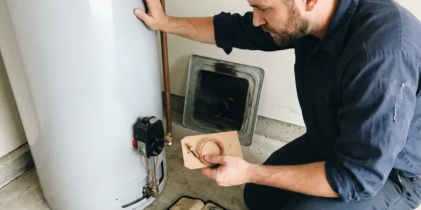
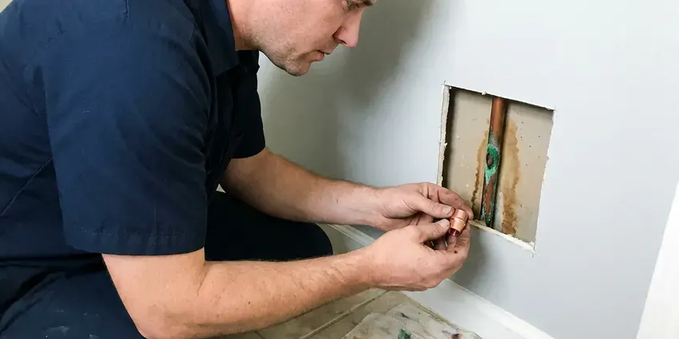

Trenchless Sewer Line Repair in Pasco, WA
Our Pasco, WA crew replaces failing sewer laterals from two small pits, pulling new HDPE pipe through the old one over one or two days.
- Small Access Pits Only
- Cured-In-Place Pipe Lining
- Most Jobs Done in One Day
- Quick Camera Inspections

No-dig sewer repair that spares your yard in Pasco, WA.
Ask FHN Plumbing for a camera inspection and a plain answer on whether trenchless fits.
Sewer Lining and Pipe Bursting in Pasco, WA
Our crew at FHN Plumbing carries a push camera with a sonde locator, plus a jetter and the inversion drum used for lining. That kit covers most residential laterals in Pasco, WA, from 3-inch cast iron to 6-inch clay. Most homes are 4-inch. We bring it all on one truck.
Work we handle every week:
- Recorded Video Pipe Inspection
- Cast iron descaling ahead of lining
- Pipe bursting with butt-fused HDPE for full lateral replacement.

Additional Plumbing Repair Services in Pasco, WA
We offer expert plumbing repair services across Pasco, WA to stop leaks, clear blockages, and keep every fixture working the way it should.


Water Heater Repair service for Pasco homeowners


Customers
Why Choose FHN Plumbing for Trenchless Sewer Line Repair in Pasco, WA?
Cutting a driveway costs you twice, first to saw and break the slab and then again to form and pour new concrete over the patch. A liner avoids both bills. For a line under concrete or pavers, trenchless is often the cheaper job after you add up what it takes to put everything back.
- Clear Pricing, You get a written price for lining, bursting or a dig before we start.
- Root-Proof Materials, Liners and fused HDPE pipe resist roots and corrosion for many years.
- Less Restoration, Small access points mean less concrete cutting and less sod to replace.
Citywide Coverage
Townhomes and condos with shared laterals are part of our Pasco coverage too. A shared lateral usually needs a sign-off from the HOA or the other owners. We help you get that approval in writing, and the camera footage makes it easier for neighbors to agree on who pays for which section of pipe.
Experienced Team
Our trenchless crew has relined many residential sewer lines and knows that the prep work, more than the liner itself, makes or breaks how long the job lasts. Resin will only bond to a pipe wall that has been cleaned down to sound material. Every install starts with jetting and, on cast iron, descaling. No shortcuts.
Safety-First Approach
Work in the public right of way, like a tap at the street main, usually needs its own permit from the city or sewer district. We file that one too. The resins we install are rated for continuous sanitary sewer service and will not break down from household drain cleaners.
Trusted Certified Pasco Plumbing Services Professionals
At FHN Plumbing, we are proud to offer certified plumbing services throughout Pasco, WA. Credentials matter in this trade. Every repair, install and maintenance visit follows strict safety and quality rules, and the plumbers doing the work carry recognized industry credentials.
Call Us Now PHCC Plumbing Contractor Recognition
PHCC Plumbing Contractor Recognition Better Business Bureau (BBB) Accreditation
Better Business Bureau (BBB) Accreditation Angi Certified Pro
Angi Certified Pro ISO 9001 Quality Management Certification
ISO 9001 Quality Management CertificationTrenchless Sewer Line Repair Services in Pasco, WA
Root Intrusion Fixes in Pasco, WA
Roots enter at the joints, where clay bells or cast iron hubs have a small gap or a failed gasket. Once in, they fill the pipe. We cut them out with a mechanical root cutter or a hydro jet, then line the pipe so those joints are sealed for good and the line stops needing a cleaning every few months. With no joints left, there is nowhere for them to return.

Perma-Liner Lining Equipment in Pasco
Perma-Liner makes inversion drums and epoxy systems for lining 2- to 6-inch drain lines, which covers most of what we see in houses. The equipment fits in a pickup bed. Compact gear matters on tight lots. The resin is mixed on site, so it does not start curing before the liner is in place.
Pipe Bursting Sewer Upgrades in Pasco
Bursting can upsize the line. We can pull in 6-inch HDPE behind a head that bursts an old 4-inch clay pipe, which helps on lines that clog because they were undersized from the start or have been added onto with extra bathrooms. The pit at each end is small. No trench in between.
Cured-In-Place Pipe Lining in Pasco, WA
CIPP stands for cured-in-place pipe. The crew saturates a felt tube with two-part epoxy on a roller table at the truck, invert it into the cleaned line with air pressure, and hold it against the old pipe wall until the resin hardens. Ambient cure takes a few hours, and hot water or steam shortens it. The finished liner seals cracks and leaking joints in the original pipe.
Cast Iron Sewer Line Lining in Pasco, WA
Cast iron rusts from the inside out, and the bottom of the pipe goes first. Plumbers call that channel rot, a groove that eats through the bottom. We descale the pipe with chain knockers or carbide cutters spinning on a flexible shaft, which brings the wall back to bare metal so a liner can bond to it. Under a slab, that beats jackhammering.
Sectional Point Repair in Pasco
A point repair is a short liner, often 3 to 5 feet long, set over one bad spot. We push it in on a packer, guided by the camera footage, and the packer inflates to press the resin-soaked sleeve against the pipe wall until it cures. One crack, one patch. Sound lines with one bad joint are the right candidates.
Pipe Bursting in Pasco, WA
Two pits are standard for a burst, one at the house end near the foundation and one out near the street or the city tap. The new HDPE pipe is butt-fused into one length first. The winch or hydraulic puller then drags the bursting head and the new pipe through. A 60-foot pull often takes under an hour.

Cost Comparison of Trenchless vs Traditional in Pasco, WA
Depth changes the math. A shallow line in open lawn is cheap to dig, but a lateral eight feet deep that runs under the driveway and a porch costs far more to excavate than to burst or line from two pits. You get both prices on paper. Then you pick.
Trenchless Sewer Line Repair Near Me in Pasco, WA
Local crews know the housing stock. In older parts of Pasco we expect clay laterals with roots at every joint, while newer subdivisions tend to have PVC that cracked from settling or got crushed during construction by heavy equipment. That shapes the first camera look. The truck is already stocked with the cutter heads and liners those pipes need.
Looking for a trenchless plumber nearby in Pasco, WA? It is worth asking whether they do the lining and bursting themselves or hire it out. FHN Plumbing runs its own lining crew. That means one company owns the schedule and the warranty from the camera to the final video, and it means the person who inspected your line is usually the one who repairs it.
FHN Plumbing at a Glance
- Fully licensed plumbing team covering Pasco, WA
- 24/7 emergency service with same-day scheduling
- Upfront, flat-rate pricing before work begins
- 4.9-star rated by 382+ Washington customers
Pasco Map
Pasco Information
- Population
- 80,038
- Area codes
- 509/208/541
- Service area
- Pasco and communities within 40 miles
- Nearby
- Kennewick, Richland, Yakima, Wenatchee
Plenty of older homes in Pasco, WA still drain through clay, cast iron or Orangeburg pipe running beneath trees and concrete, which is exactly where trenchless repair saves the most digging.
Expert Services
Reach out to FHN Plumbing for reliable plumbing work done by licensed pros in Pasco, WA.
Our Specialized Plumbing Services in Pasco, WA
At FHN Plumbing, you get every kind of plumbing service from one company across Pasco, WA. From leak detection to full system installs, our team works fast and charges fair prices on homes and commercial properties alike. Here are the core services we offer:


From Camera to Cured Liner, Trenchless Repair in Pasco, WA
We start with a camera, finish with a camera, and keep the digging to a pit or two in between.
Request a Quote
Call (425) 491-3131 to book a sewer camera inspection. We record the video and mark problem spots on the surface with a locator.
Review Repair Options
We go through the footage with you and explain whether lining, a point repair or bursting fits. You get a written price for each suitable option.
Repair and Verify
We clean and prep the line, finish the repair and backfill any pits. A last camera run confirms the new pipe is sound.
Frequently Asked Questions About Trenchless Sewer Line Repair in Pasco
Most trenchless sewer jobs in Pasco, WA fall between $4,000 and $15,000. The biggest factors are the length of the run and whether we line or burst. Depth and access matter too, so a line under a driveway with only one cleanout will cost more than an open-lawn lateral of the same length.
It handles cracks, fractures, root intrusion and small offsets well. A disintegrated pipe is another story. Severe offsets and deep bellies may need a dig, since a liner follows the shape of the host pipe and will copy the sag right along with it. The video decides.
Roots cannot get into the lined section. A properly installed liner has no joints, so they have nowhere to get in.
Probably, if the pipe still holds its round shape. Cracked and root-filled lines usually line well, and so does cast iron with surface corrosion, as long as there is enough sound wall left to descale and bond to. Collapsed lines need bursting instead.
Glacial till and dense hardpan are common in western Washington, and they drain poorly enough to keep water against foundations and in crawlspaces. Soil that swells and shrinks with moisture puts stress on rigid pipe joints, which is how clay and cast iron lines crack and separate. HDPE flexes instead of breaking. A cured liner also removes the joints that tend to fail first.
Decades. Quality liners and HDPE pipe carry a 50-year design life from most manufacturers when installed correctly.
Not in any practical way. Lining takes an inversion drum, a calibrated resin mix and a camera to check the work, and pipe bursting takes a hydraulic puller and an HDPE fusion machine that most plumbers do not even own. Most places also require a licensed plumber on the permit.
Pipe bursting uses high-density polyethylene, HDPE, fused into one continuous length with no joints. Liners are felt tubes soaked in epoxy. Both resist roots and corrosion, and both are rated by their makers for a service life of around fifty years when installed on properly prepared pipe.
What People Are Saying About Our Plumbing Experts?

Robert G.
The camera showed a full break in our clay sewer line near the street. FHN Plumbing replaced it with a trenchless pipe burst, so the only digging was two small pits in the yard. They let us watch the footage before and after.
Sewer Line Replacement · Wenatchee, WA
Greg S.
I manage a small strip center with six tenants. FHN Plumbing handles our annual backflow testing and fixed a recurring clog in the shared sewer line that had been backing into the nail salon. Their reports come in clean and on time.
Commercial Plumbing · Wenatchee, WA
Megan L.
Our upstairs tub drained so slowly that every shower turned into a bath. FHN Plumbing pulled a wad of hair out of the stopper and then snaked the line past the trap. Three months later it still drains fast.
Drain Cleaning · Pasco, WAJames P.
Our restaurant had a slow leak at the hand sink that was rotting the cabinet base. FHN Plumbing came in at six in the morning before prep, replaced the trap and both supply lines, and was packed up before my first cook clocked in.
Commercial Plumbing · Spokane Valley, WA
Laura S.
Our 40 gallon tank started leaking from the bottom after thirteen years. The tech hauled the old one out, set a new unit with a fresh expansion tank, and had hot water running in about four hours. He took the old tank with him too.
Water Heater Replacement · Wenatchee, WAEmily R.
The shutoff valve under our kitchen sink snapped off in my hand on a Sunday morning. FHN Plumbing had someone out by early afternoon. He replaced both angle stops with quarter turn valves and showed me where our main shutoff was, which I honestly did not know.
Plumbing Repair · Wenatchee, WA